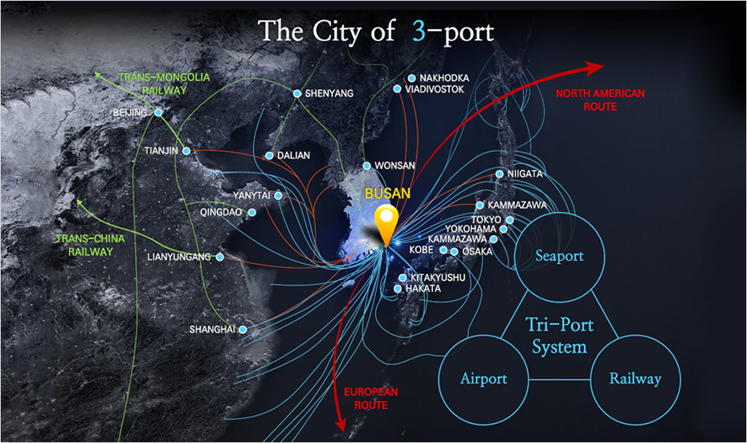

世界物流の戦略的要衝
- Home
- 投資メリット
- 世界物流の戦略的要衝
世界物流の戦略的要衝
2030年に欧州とアジアをつなぐ近道である北極航路が開拓されれば、釜山から欧州までの距離は従来の距離より40%、北米までは30%短縮される見通しです。また、釜山は韓国から中国とロシアを経て欧州まで続く鉄道「シルクロードエクスプレス(SRX)」の実現に向けて重要な出発地であり、北東アジアの物流の中心都市から世界の物流の中心地に生まれ変わると期待されます。



北東アジア海洋物流ハブとしての釜山
2014年ベースで世界5位のコンテナ港湾であり、韓国を出入りするコンテナ貨物量の75%を取り扱う韓国最大の港湾でもある釜山港は、年間貨物取扱量が1,700万TEU以上のスーパー港湾であるとともに、世界約100カ国500港と結ばれている北東アジアの物流の中心基地でもあります。2020年までに釜山新港に45バースを開設し、後背地に最先端システムを備えた物流センターなどを造成してリードタイムを最小化することにより、釜山は世界的な港、北東アジアの物流ハブとなるでしょう。